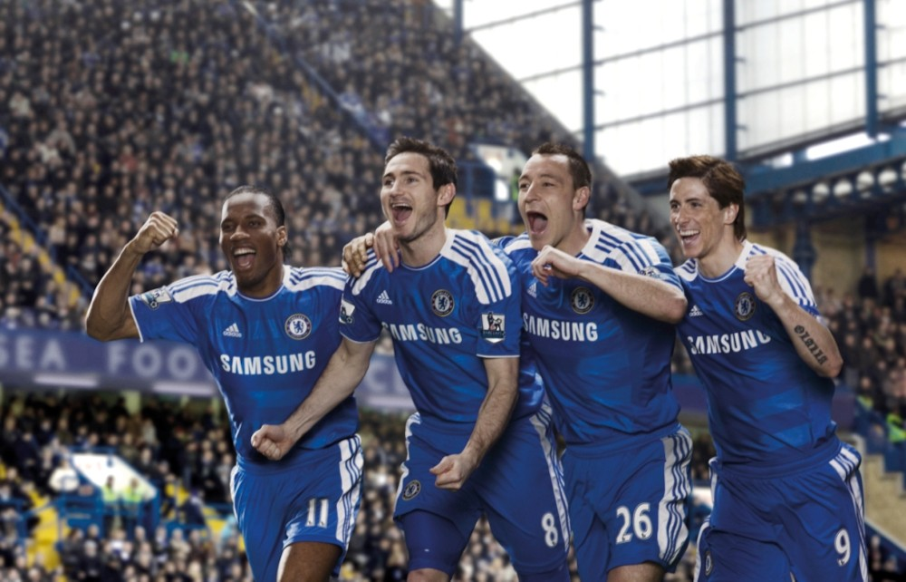

지옥에서 천당으로
드라마보다 더 거짓말같았던 첼램덩크
로만 아브라모비치 구단주 체제가 들어선 이후, 사상 최악의 리그 성적인 6위로 마무리하게 되었다. 이는 챔피언스리그 티켓을 획득할 수 있는 4위권 진입에 실패했다는 의미...하지만 첼시는 FA컵에서 극적인 우승. UEFA 챔피언스 리그에서는 몇번의 고비를 넘기고, 결승에서 FC 바이에른 뮌헨마저 꺾어 창단 첫 우승을 차지. 망했다고 생각했던 11/12 시즌을 빅이어와 FA컵을 따낸 더블이란 기적같은 성적을 거둔 첼시 역사상 최고의 시즌으로 바꿔놓으며 , 내년 챔피언스 리그 진출권을 확보했다!
이로서 첼시는 런던 축구 클럽들 중에서 최초로 UEFA 챔피언스 리그를 우승한 팀이 되었다.[32] 그리고 로베르토 디 마테오는 1999-2000 시즌의 비센테 델 보스케 전 레알 마드리드 감독에 이어 감독대행 신분으로 챔피언스 리그를 우승한 두번째 감독이 되었다.[33] 그야말로 기적같은 시즌이 11-12시즌이었다.\